Mental Wellness Practices
Mudras for Anxiety & Mental Balance
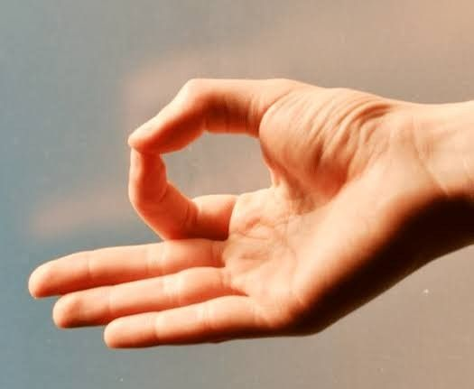
Gyan Mudra
- Calms the mind
- Reduces overthinking
- Improves focus
- Do 10–15 minutes daily
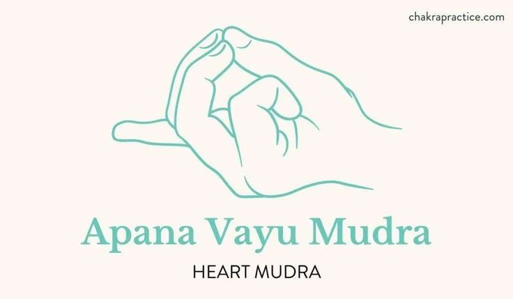
Apan Vayu Mudra
- Reduces anxiety
- Slows fast heartbeat
- Brings instant relaxation
- Do 5–10 minutes during stress
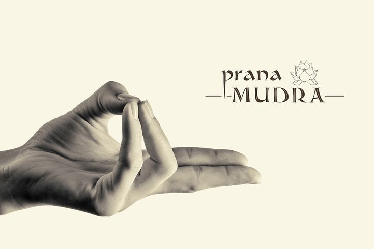
Prana Mudra
- Boosts energy & mood
- Helps with mild depression
- Do 10–15 minutes daily
Shunya Mudra
- Creates emotional balance
- Calms restlessness
- Do 10 minutes
Yoga Poses for Anxiety & Depression
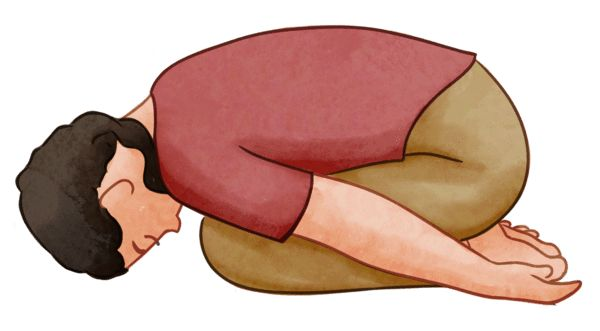
Balasana (Child’s Pose)
- Deep relaxation
- Reduces anxiety
- Relieves emotional stress
- Hold 1–3 minutes
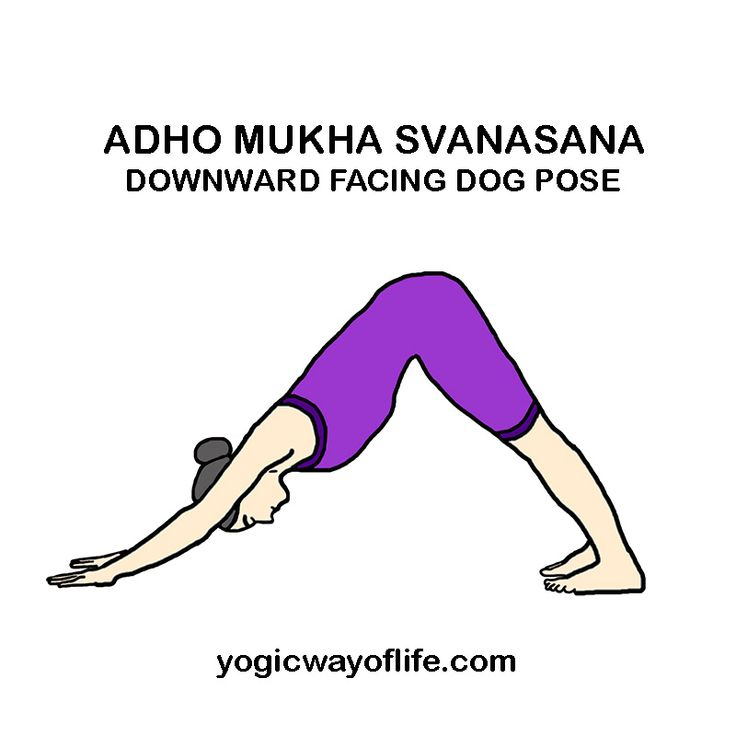
Adho Mukha Svanasana
- Improves blood flow to brain
- Relieves fatigue
- Helps mild depression
- Hold 30 seconds
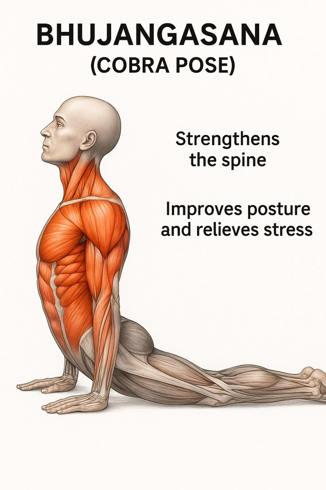
Bhujangasana (Cobra Pose)
- Opens chest
- Improves mood
- Reduces heaviness
- Hold 20–30 seconds
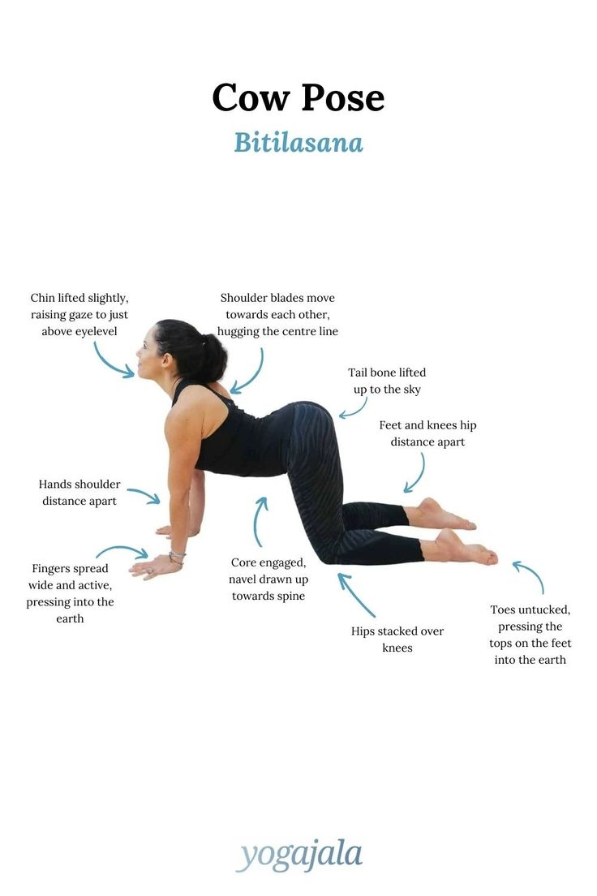
Cat–Cow Pose
- Releases tension
- Reduces stress
- Improves breathing
- Do 10 slow rounds
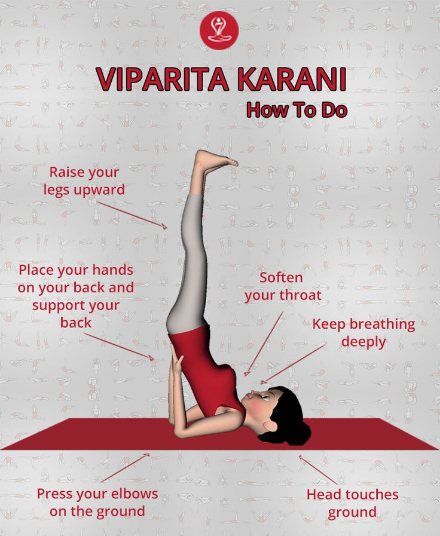
Viparita Karani
- Exceptionally calming
- Helps anxiety & insomnia
- Relaxes nervous system
- Hold 3–5 minutes
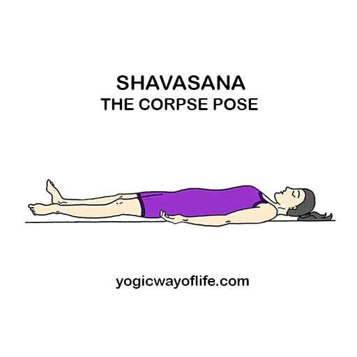
Savasana (Corpse Pose)
- Deep relaxation
- Reduces stress
- Mind-body integration
- Hold 5–10 minutes
Breathing Exercises
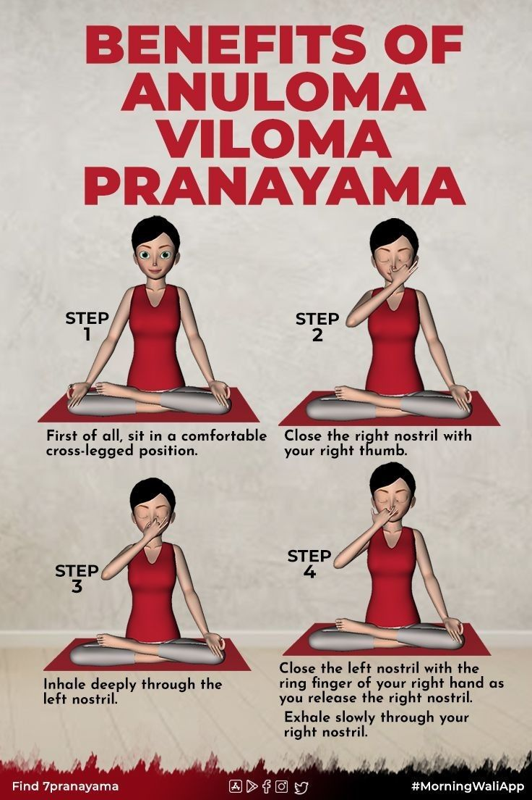
Anulom Vilom (Alternate Nostril Breathing)
- Balances brain hemispheres
- Reduces anxiety
- Do 5 minutes
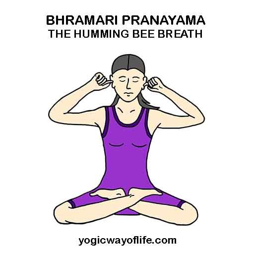
Bhramari (Humming Bee Breath)
- Reduces panic, anger, stress
- Do 5–7 rounds
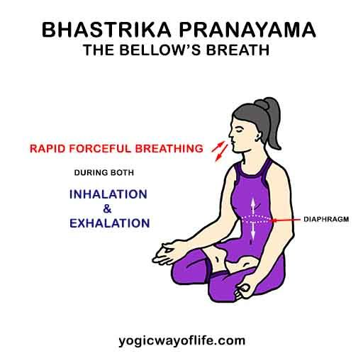
Deep Belly Breathing
- Inhale 4 sec → Exhale 6 sec
- Repeat for 5 minutes
- Do daily for best results